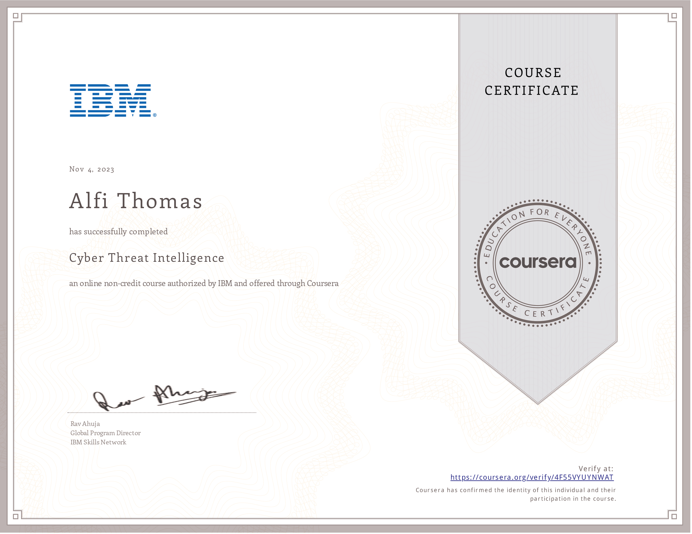

Issued to Alfi Thomas by Coursera
Authorized by IBM
This badge earner can describe examples of network defensive tactics, discuss data loss prevention and endpoint protection concepts and tools, and explore the IBM Security Guardium user interface to learn how to classify data in a database environment. The earner can describe security vulnerability scanning technologies and tools and identify the key concepts around threat intelligence. They have explored the IBM Security QRadar SIEM product and suspicious alerts and know how to take action.
Alfi Thomas has successfully completed 'Cyber Threat Intelligence' on November 4, 2023, an online, non-credit course authorized by IBM and offered through Coursera.
